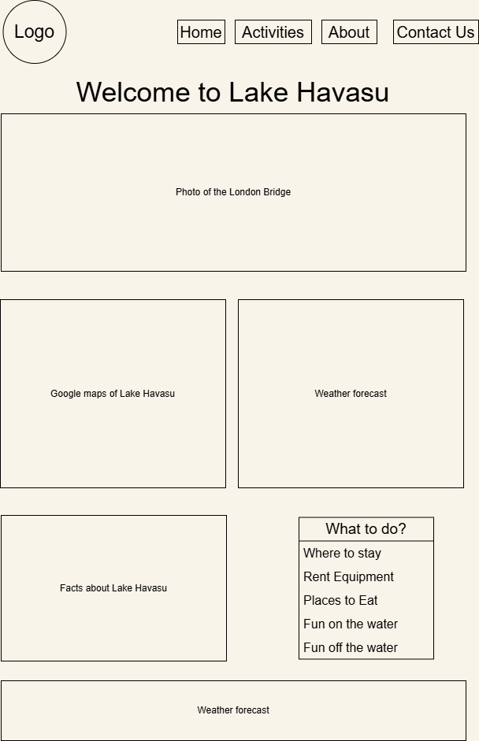
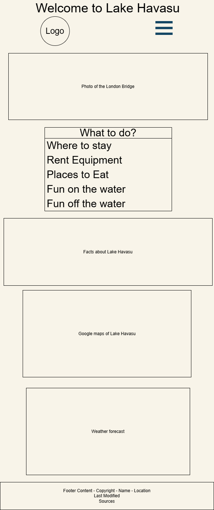

Site Name: Lake Havasu Water Sports
site availability:
lakehavasuwatersports.com
This
site name was chosen because watersports is central to the culture of Lake Havasu and is a majority of
the
reason tha poeple visit in the first place
Site Purpose: This site provides residents of Lake Havasu City, and visitors, a guide to enjoy the water and the surrounding area. Where to rent or purchase equipment, food and lodging, entertainment, and attractions.
Scenarios:
- Where can I stay if I am visiting?
- I have a boat/pwc/kayak, where can I launch it?
- Where can I rent a boat/pwc/kayak/etc?
- Where is a good place to eat?
- What is the weather like?
- What is there to do off the water?
Color Schema:
- #005F73, Deep Blue: Headings, Primary Buttons, Navigation
- #CA6702, Copper Orange: Call to Action
- #F8F4E9, Off-white Sand: Main background
- #0A2129, Dark Charcoal: Footer background
- #212529, Almost Black: General text
Typography:
- Roboto (Sans-Serif): Used for headlines, Navigation, Buttons, and Labels.
- Quicksand (Rounded Sans-Serif): Used for Body Text, Blockquotes, and Paragraphs.
Wireframe:
Desktop Wireframe
Mobile Wireframe
